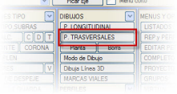
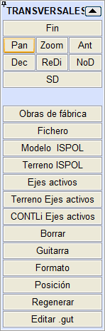
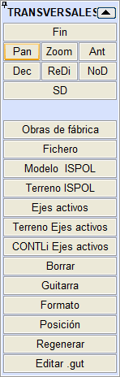
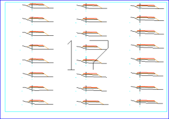
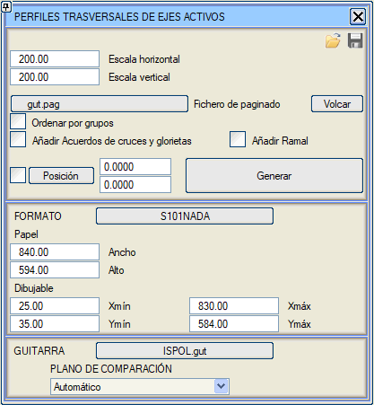
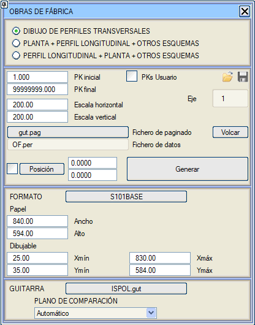

 BOYKESİT menüsünden enkesit paftalarının oluşturulmasına yönelik menüye erişilir. Bu menüye YÜZEY MODELLEME modülünden, [ENKESİT ÇİZ] seçeneği ile de erişilebilir. BOYKESİT menüsünden enkesit paftalarının oluşturulmasına yönelik menüye erişilir. Bu menüye YÜZEY MODELLEME modülünden, [ENKESİT ÇİZ] seçeneği ile de erişilebilir.
Buradan, enkesit dosyalarında bulunan bilgilerin grafiksel gösterimi ve paftalarının oluşturulması yapılabilir.
ispol#.per dosyaları (ve herhangi bir enkesit dosyası) bu şekilde dağıtılmış bir formatta (aynı sayfada birkaç enkesit) sunulabilir; ister kağıt formatında ister dijital formatta (.pdf, .dxf, vb.).
Bu paftaları elde etmeyi sağlayan sistem, boykesitler için açıklanana benzerdir: bu durumda .gut uzantısına sahip olan bir tanımlayıcı dosya, bir dizi enkesiti az ya da çok detaylı ve zenginleştirilmiş bir şekilde çizmek için gerekli komutları saklamakla görevlidir.
ISTRAM®/ISPOL® ayrıca, bu dosyaları interaktif bir şekilde değiştirmeyi sağlayan enkesit paftaları için bir şablon düzenleyici sunar.
Paftaları oluşturmak için format + pota kombinasyonunun uygulanacağı dosya veya dosyaların seçimi aşağıdaki gibi olabilir:
[Menfezler]
|
Bu seçenek, menfezlerin OF.per dosyasını seçer. Bu tür enkesitler için özel bir enkesit potası ile kullanılmalıdır, örneğin obfa1.gut.
|
| [Dosya] |
Ekrandan seçilen herhangi bir enkesit dosyasını göstermeyi sağlar. Birden fazla enkesit dosyası seçmek mümkündür, bunlar art arda işlenir, böylece örneğin az sayıda enkesiti olan iki eksen aynı sayfada çizilebilir. Dosyalar farklı eksenlere ait olduğunda, eksen numarasını etiketleyen bir şablon kullanılması önerilir.
|
| [ISPOL Modeli] |
ISPOL#.per dosyasını temsil eder, # seçenekler iletişim kutusundan seçilecek eksenlerden biridir.
|
[ISPOL Arazi]
|
BOYKESİT veya KIRMIZI KOTLAR menüsünden yüklenen son arazi enkesit dosyasını temsil eder.
|
[Aktif eksenler]
|
Aktif bir grupta bulunan tüm eksenlerin enkesitlerini aynı anda oluşturmayı sağlar. Eksen numarasının modeli de aktif olmalıdır. Bu komut, aşağıda görünen iletişim kutusundaki Gruplara göre sırala seçeneği ile eksenleri gruplara göre sıralamayı sağlar.
|
[Aktif Eksenler Arazi]
|
Tüm eksenlerin tüm arazi enkesitlerini aynı anda çizmeyi sağlar.
|
[Sil]
|
Oluşturulan son enkesitleri siler.
|
[Pota]
|
Kütüphanede mevcut olan .gut şablonlarından birini seçmeyi sağlar, böylece enkesitler oluşturulurken bu şablon kullanılır. Program bu şablonu varsayılan olarak ayarlar ve değiştirilene kadar kullanımda kalır.
|
Yukarıdaki seçeneklerden herhangi biri için sistem aşağıdaki gibi bir iletişim kutusu gösterir:

[ ] Kavşak ve Dönel Kavşak Kolları Ekle kutucuğu işaretlendiğinde, program kavşak ve/veya dönel kavşak içeren projelerde projenin BIM'i için gerekli tüm geometriyi oluşturur.
[ ] Branş Ekle ([Aktif Eksenler] içinde) enkesitleri, varsa ISPOLn.per dosyaları yerine ISPOLn_AR.per dosyalarını kullanarak branşları dahil ederek çizmeyi sağlar.
Konum düğmesine basıldığında, enkesitlerin çizimi için başlangıç noktasının belirleneceği nokta ekrandan seçilebilir. Bu noktanın kullanılması için [ ] Konum kutucuğunun işaretlenmesi gerekir, aksi takdirde varsayılan konum atanır.
Pafta dosyası (.pag), daha sonra çizici için paftaları oluşturmak üzere paftaların konum bilgilerini saklar. Bu dosyanın varsayılan adı gut.pag'dır. Ayrıca, boykesit çizim iletişim kutusundan sayfaları dökme imkanımız da vardır.
FORMAT'a ayrılmış bölümden, yüklenen şablondan bağımsız olarak sayfa başına milimetre cinsinden uzunluk seçilebilir. Ayrıca, seçilen formattan bağımsız olarak çizilebilir genişlik ve yükseklik de seçilebilir. Sayfa başına mm cinsinden uzunluk değiştirildiğinde, seçilen formattan bağımsız olarak çizimin yapılabilmesi için Maks. X çizilebilir ve kağıt genişliği değerleri otomatik olarak değişir.
Bu enkesit çizim iletişim kutusundan, seçilen format ve pota da değiştirilebilir.
Karşılaştırma düzlemiyle ilgili olarak şunları seçebiliriz:
- Konum dosyasını kullan:
Geopak'ten gelen .dgn dosyalarını içe aktarırken önceden oluşturulmuş dosyaların (.pos) konumunu okur. Bu konum dosyaları x, y, z_kd, km gibi verileri içerir.
- Sabit Kot: tüm enkesitler için aynı kot verilir.
- Otomatik+Eksen_X_gut.pkz Oluştur: enkesitler çizilirken, her km için kullanılan karşılaştırma düzlemi kotunu içeren bir pkz dosyası oluşturulur.
- Eksen_X_gut.pkz dosyasını kullan
: oluşturulan pkz dosyasını düzenlemeye izin verir ve enkesitleri çizerken karşılaştırma düzlemleri için bu dosyanın kotlarını kullanır.
Tüm bilgilerle, ISTRAM®/ISPOL®, enkesit sayfalarını ekranın teorik veri sınırının üzerinde bir alanda oluşturur. Bu enkesitler, programın tüm grafik düzenleme araçlarıyla tamamen düzenlenebilir.
Yüklediğimiz .gut dosyasının adı, eksen numarasının altında etiketlenir. Bu etiketleme, enkesitlerin soluna konumlandırılır.
Dosya → Yazdır… menüsünden, bu enkesit paftalarının fiziksel veya sanal bir yazıcıya (.dxf, .dgn, .pdf,…) grafik çıktısı için tüm araçlar bulunur.
Menfezler durumunda, menü aşağıdaki gibidir:

MENFEZLER paftaları için özel bir paftalama oluşturulmuştur. Aşağıdaki gibi ilerlemeliyiz:
- Menfezler menüsünde, her birinin .OBF dosyasında, kendi geometrisinin yanı sıra, Simgeler, Çizgiler, Metinler, Hücreler ve 11N sekmelerinde planda farklı verilerin nasıl etiketleneceği tanımlanır. (Not: Metinler sekmesinde: eğer sütun başına bir tablo çizilmesi istenirse (1 satır), tablonun konumu Menfez numarasına bağlıdır ve aktif olmayan veya bu çizim moduna sahip olmayan yapılar tarafından bırakılan boşluklar doldurulmaz. Bu, Profil-Plan-Tablo-Şema gibi birleşik paftaların otomatik alt paftalanmasına olanak tanır).
- [Profil] Aracında, her Menfez için bir enkesit içeren OF.per dosyası oluşturulur.
- Planı göstermek için uygun bir ölçek seçiyoruz, örneğin 1:200.
- Ölçeği seçtikten sonra, [Plan] Aracı ile Menfezlerin planı ve ilişkili etiketlemesi oluşturulur.
- Boykesit->Çizimler->Enkesitler'e gidiyoruz:
- .gut Düzenle'de bir pota seçip şunları ayarlıyoruz: Maksimum satır sayısı = 1. Maksimum sütun sayısı = 1.
- Boykesit -> Çizimler -> Enkesitler -> [Menfezler]. Bu iletişim kutusunda şimdi şunları seçebiliriz: PLAN+ENKESİT+BOYKESİT+DİĞER ŞEMALAR. .gut dosyasını seçip [Oluştur]'a basıyoruz. Bu, aşağıdaki paftalamayı oluşturur: Her Menfez için bir sayfa; Menfezin boykesiti Orta Alt Sayfada; Giriş Ağzı->Çıkış Ağzı Yönlendirilmiş Plan Üst Alt Sayfada; Ve diğer şemalar için ayrılmış başka bir alt sayfa.
- Yazdırma Menüsünde, bir çizim modu ve paftalamada daha önce oluşturulan dosyayı (örn. gut.pag) yüklüyoruz ve birleştirilmiş sayfaları önizleyebiliriz.
|